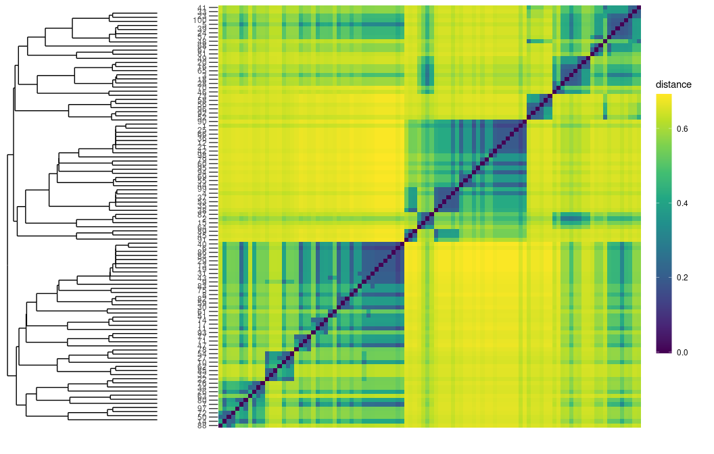

Overview
The diffudist package provides several functions for evaluating the diffusion distance between nodes of a complex network.
Installation
# Or the development version from GitHub
# install.packages("devtools")
devtools::install_github("gbertagnolli/diffudist")Usage
Additionally to diffudist you will also need the igraph package, because the main arguments of the functions in diffudist are networks as igraph objects.
library(diffudist)
library(igraph)
#>
#> Attaching package: 'igraph'
#> The following objects are masked from 'package:stats':
#>
#> decompose, spectrum
#> The following object is masked from 'package:base':
#>
#> union
library(ggplot2)
igraph_options(
vertex.frame.color = "white",
vertex.color = "#00B4A6",
label.family = "sans-serif")Examples
N <- 100
g <- sample_pa(N, directed = FALSE)
deg_g <- degree(g)
vertex_labels <- 1:N
vertex_labels[which(deg_g < quantile(deg_g, .9))] <- NA
plot(g, vertex.label = vertex_labels, vertex.size = 6 + 10 * (deg_g - min(deg_g)) / max(deg_g))
D <- get_distance_matrix(g, tau = 2, type = "Normalized Laplacian", verbose = FALSE)
# or, for short:
# get_DDM(g, tau = 2, type = "Normalized Laplacian", verbose = FALSE)
MERW_Pt <- get_diffusion_probability_matrix(g, tau = 2, type = "MERW")
#> Unweighted network.
#> Evaluating the MERW Normalized Laplacian matrixThe probability transition matrix returned from get_diffusion_probability_matrix (or its shortened version get_diffu_Pt) is the matrix e−*τ**Lrw. The diffusion dynamics is controlled by the specific Laplacian matrix Lrw = I − Trw, where T*rw is the jump matrix of the discrete-time random walk corresponding to our continuous-time dynamics.
Let us check that MERW_Pt is an actual stochastic (transition) matrix, i.e., that its rows are probability vectors
if (sum(MERW_Pt) - N > 1e-6) {
print("MERW_Pt is not a stochastic matrix")
} else {
print("MERW_Pt is a stochastic matrix")
}
#> [1] "MERW_Pt is a stochastic matrix"Compute diffusion distances from the Probability matrix MERW_Pt as follows:
if (requireNamespace("parallelDist", quietly = TRUE)) {
# parallel dist
D_MERW <- as.matrix(parallelDist::parDist(MERW_Pt))
} else {
# dist
D_MERW <- as.matrix(stats::dist(MERW_Pt))
}Plot distance matrix
And finally plot the distance matrices (requires ggplot2 and ggdengro)
plot_distance_matrix(D, show_dendro = FALSE) +
scale_y_discrete(breaks = vertex_labels[!is.na(vertex_labels)])
plot_distance_matrix(D_MERW, show_dendro = FALSE) +
scale_y_discrete(breaks = vertex_labels[!is.na(vertex_labels)])
Adding the hierarchical clustering, i.e., visualising a dendrogram.
plot_distance_matrix(D)
plot_distance_matrix(D_MERW)
References
Bertagnolli, G., & De Domenico, M. (2021). Diffusion geometry of multiplex and interdependent systems. Physical Review E, 103(4), 042301. DOI: 10.1103/PhysRevE.103.042301, arXiv: 2006.13032, my-website.